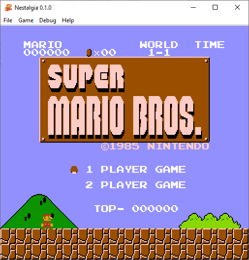
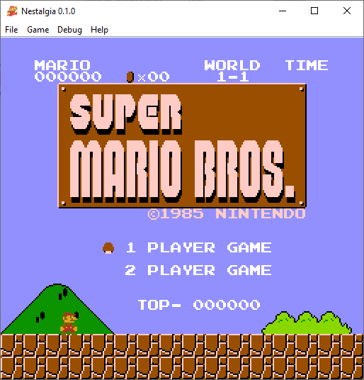

About
Nestalgia is a WIP cross-platform and high-accuracy NES/Famicom emulator built in Kotlin.
It's being ported from discontinued Mesen
NES/Famicom emulator built in C++ and C#.
Features
- High Accuracy
- High Compatibility: Over 290 mappers supported
- NES, Famicom, Famicom Disk System, Dendy, VS System, NSF and NSFe emulation is supported
- Save States, Battery, Overclocking and Cheat Codes
- Audio, Video, Controller and Emulation config support
- Zapper and AsciiTurboFile is supported
- Fullscreen and Screenshot support
- Gamepad Support
 
